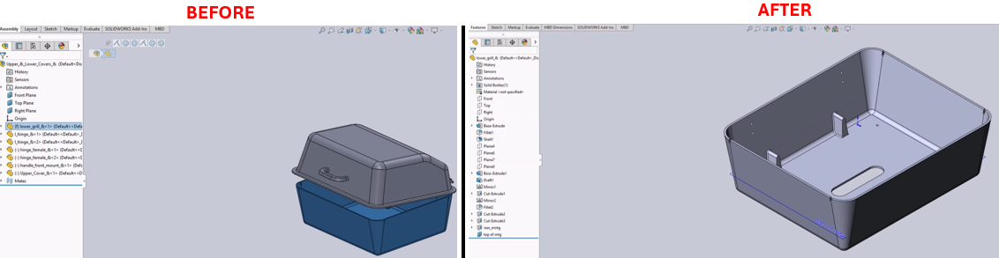

Open Selected Part Separately from Assembly in SolidWorks
Description
This macro enables users to select a part in an assembly and open it in a separate window with a single command. The macro can be conveniently assigned to a keyboard shortcut (e.g., the 'O' key) for quick access, making it faster to edit parts without manually navigating through the assembly.
System Requirements
- SolidWorks Version: SolidWorks 2014 or newer
- Operating System: Windows 7 or later
Pre-Conditions
Note
- The active document must be an assembly with at least one part.
- A part in the assembly must be selected before running this macro.
Results
Note
- Opens the selected part in a new SolidWorks window.
- The main assembly remains open, allowing quick switching between the assembly and the part.
VBA Macro Code
' Disclaimer:
' The code provided should be used at your own risk.
' Blue Byte Systems Inc. assumes no responsibility for any issues or damages that may arise from using or modifying this code.
' For more information, visit [Blue Byte Systems Inc.](https://bluebyte.biz).
Option Explicit
Dim swApp As Object
Dim Part As Object
Sub main()
Set swApp = Application.SldWorks
Set Part = swApp.ActiveDoc
' Attempt to open the selected component part
Part.OpenCompFile
End Sub
Macro
You can download the macro from here
Customization
Need to modify the macro to meet specific requirements or integrate it with other processes? We provide custom macro development tailored to your needs. Contact us.